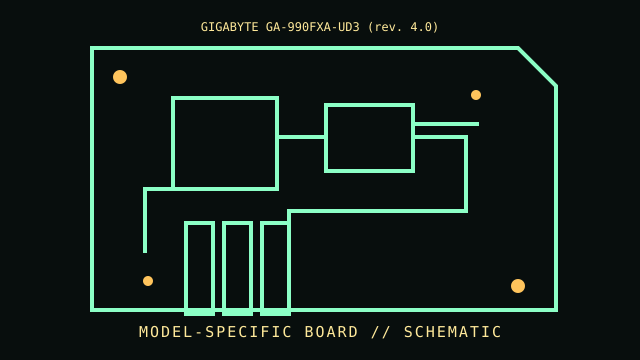

[ INDIVIDUAL COMPONENT // MOTHERBOARDS ]
GIGABYTE GA-990FXA-UD3 (rev. 4.0)
AM3+ / AMD 990FX + SB950, 2012–2013. This entry documents one exact board model/revision; its specifications are not interchangeable with similarly named variants.

REVISION WARNING: Confirm the PCB silk-screen, assembly/AA code and firmware ID on the actual board. Where documentation does not identify one PCB spin, this record states the exact documented model and explains the revision distinction below.
Specifications
| Exact model / revision | GA-990FXA-UD3 PCB revision 4.0 |
|---|---|
| CPU / socket | AM3/AM3+ AMD processors on the revision 4.0 support list; FX-series TDP and BIOS requirements are SKU-specific |
| Chipset / platform | AMD 990FX northbridge + SB950 southbridge |
| Memory | Four DDR3 DIMM slots, dual-channel, up to 32 GB under board specification; validated speed depends on CPU and DIMM population |
| Form factor | ATX |
| I/O and expansion | Three PCIe x16-length slots (lane sharing varies), PCIe x1/PCI, six SATA 6 Gb/s, USB 3.0, Gigabit Ethernet and audio |
| Firmware compatibility | UEFI/Hybrid EFI and DualBIOS; flash only revision 4.0 BIOS, verify CPU-list minimum and recovery path |
Compatibility and revision pitfalls
The GA-990FXA-UD3 has multiple PCB revisions with separate manuals/BIOS and sometimes different CPU support. This entry is rev. 4.0; read the PCB edge before selecting firmware. High-TDP CPUs need documented VRM and cooling conditions.
Socket fit alone is not proof of support. Confirm the manufacturer CPU support list, the board's minimum BIOS, memory population table, and exact chassis/power requirements before operation.
Preservation notes
Record revision, BIOS string and RAID mode, and retain the original firmware image. Inspect VRM heatsinks, fan headers and socket area; label RAID disk order before moving a live array.
Record provenance, date/serial codes, board and firmware revision, known repairs and test conditions. Photograph labels and connectors before cleaning or component removal; retain original firmware and configuration data when possible.
Sources & further reading
- GIGABYTE GA-990FXA-UD3 rev. 4.0 — manual, BIOS and CPU supportOfficial revision-specific support. Use CPU support and firmware for rev. 4.0 only.
- GIGABYTE GA-990FXA-UD3 rev. 4.0 product recordManufacturer specification page for the exact PCB revision.
Manufacturer manuals, CPU lists and archived primary documents take precedence over reseller summaries. If an archived support page omits a revision-specific file, do not assume another revision's firmware is compatible.